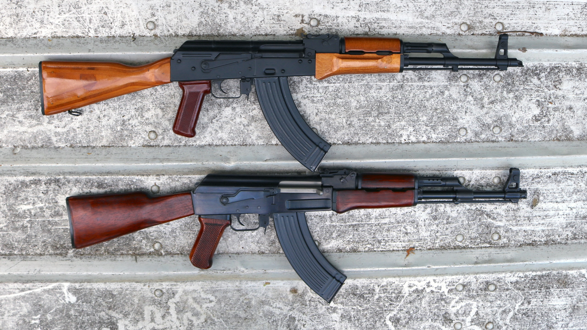
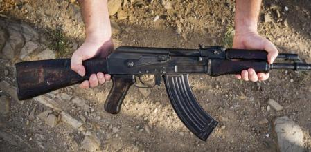
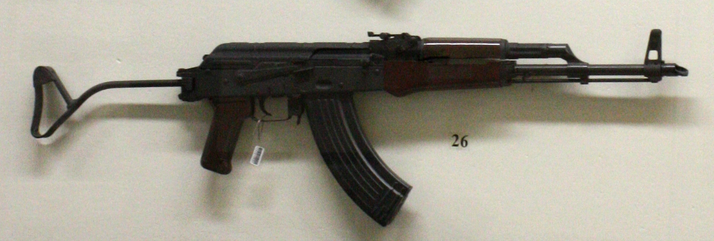

WEPON'S USED BY INDIAN ARMY
AKM (Avtomat Kalashnikova Modernizirovannyy)
The AKM (Russian: Автомат Калашникова модернизированный, tr. Avtomat Kalashnikova modernizirovanny, lit. 'Kalashnikov's Automatic Rifle Modernised') is an assault rifle designed by Soviet small arms designer Mikhail Kalashnikov in 1959. It was developed as the successor to the AK-47 adopted a decade prior. Introduced into service with the Soviet Army in 1959, the AKM is the most prevalent variant of the entire AK series of firearms and it has found widespread use with most member states of the former Warsaw Pact and its African and Asian allies as well as being widely exported and produced in many other countries. The production of these rifles was carried out at both the Tula Arms Plant and Izhmash. It was officially replaced in Soviet frontline service by the AK-74 in the late 1970s, but remains in use worldwide. The AKM maintains the AK-47's wood stock, but has simpler individual parts that are favorable for mass production. Like the AK-47, many variants of the AKM exist such as the AKMS, AKML, and AKMP.
AK-47 (Avtomat Kalashnikova 1947)
The AK-47, officially known as the Avtomat Kalashnikova , lit. 'Kalashnikov's automatic rifle' also known as the Kalashnikov or just AK), is a gas-operated assault rifle that is chambered for the 7.62×39mm cartridge. Developed in the Soviet Union by Russian small-arms designer Mikhail Kalashnikov, it is the originating firearm of the Kalashnikov (or "AK") family of rifles. After more than eight decades since its creation, the AK-47 model and its variants remain one of the most popular and widely used firearms in the world. The model and its variants owe their global popularity to their reliability under harsh conditions, low production cost (compared to contemporary weapons), availability in virtually every geographic region, and ease of use. The AK has been manufactured in many countries and has seen service with armed forces as well as irregular forces and insurgencies throughout the world. As of 2004, "of the estimated 500 million firearms worldwide, approximately 100 million belong to the Kalashnikov family, three-quarters of which are AK-47s". The model is the basis for the development of many other types of individual, crew-served, and specialized firearms.
MPi-KMS-72(Maschinen-Pistole Kalaschnikow mit Schulterstütze 72)
Early versions of the rifles had wooden furniture, but later models have distinctive stippled brown buttstocks and pistol grips. The MPi-KMS (also called MPi-KM72) also has a side folding single strut "coat hanger" stock, a feature which is shared with the later Romanian rifles, and was never issued with a beach wood handguard. The handguards also differ. On early production weapons (from before ~1980-1981), a beech wood lower handguard was used due to them not being able to construct a plastic handguard that wouldn't melt at the time. From 1981 on, it was a bakelite lower handguard and a slanted muzzle brake. It should also be noted that rifles from 1965-1966 have been observed with laminate wood stocks that do not feature a trap door for a cleaning kit, unlike other AKM clones. The MPi-KM also has subtle differences such as a blued finish, different selector markings, and most noticeable, smaller sling loops to accommodate a proprietary 1-inch-wide nylon or canvas sling. This feature was removed from the AK-74 clone made in East Germany.
.png)